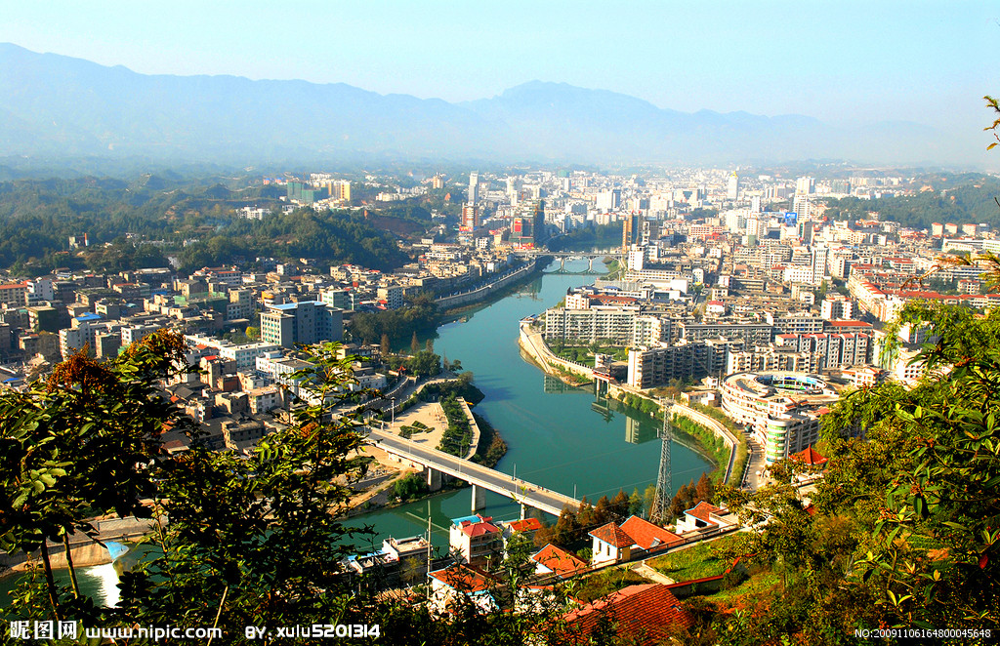
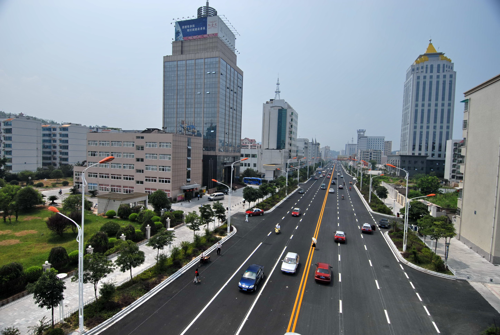
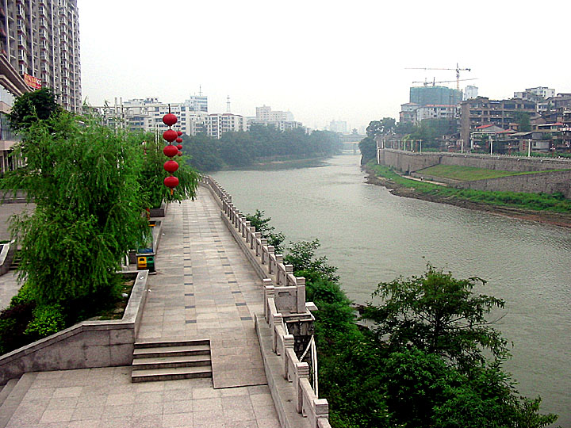
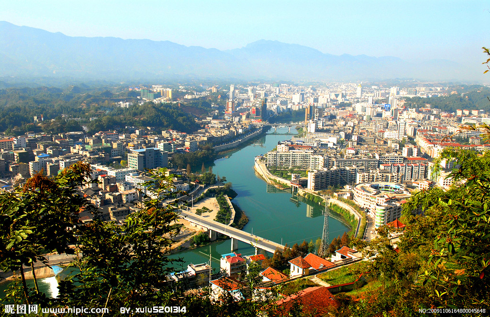
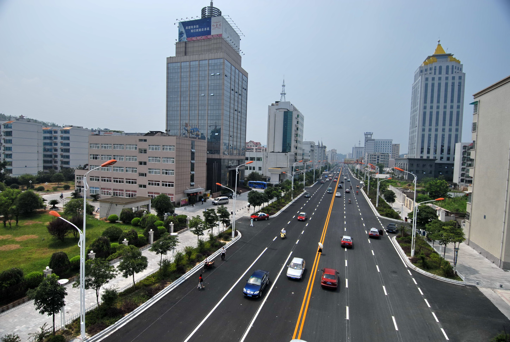
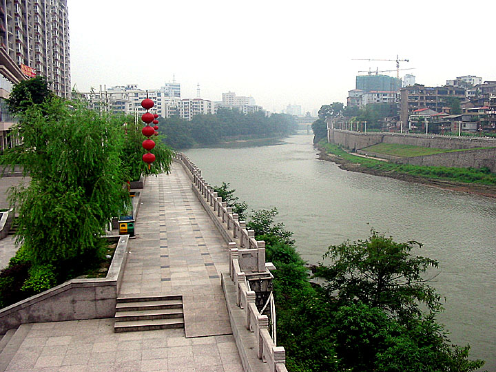

恩施土家族苗族自治州
恩施土家族苗族自治州位于中国湖北省西南部，简称恩施州，是中国湖北省下辖的民族自治州。西面和北面临近重庆市，东临宜昌市，南临 湖南湘西土家族苗族自治州，东北接神龙架林区。面积24111平方千米，人口394万，其中汉族约占45%，土家族约占46%,苗族约占6.5%。 世界25首著名民歌之《龙船调》就诞生在恩施州的利川市，因此恩施州又被称之为“龙船调的故乡”。
恩施土家族苗族自治州位于中国湖北省西南部，简称恩施州，是中国湖北省下辖的民族自治州。西面和北面临近重庆市，东临宜昌市，南临 湖南湘西土家族苗族自治州，东北接神龙架林区。面积24111平方千米，人口394万，其中汉族约占45%，土家族约占46%,苗族约占6.5%。 世界25首著名民歌之《龙船调》就诞生在恩施州的利川市，因此恩施州又被称之为“龙船调的故乡”。
恩施州属亚热带季风山地湿润气候。冬少严 寒，夏无酷暑，雨量充 沛，四季分明；海拔落 差大，小气候特征明显 ，垂直差异突出，“一山 有四季，十里不同天”。 境内年均气温16.2度， 年平均降水量1600毫米。 地处武汉和重庆两大 “火炉”之间，是最适宜 人类居住的地区之一
 




